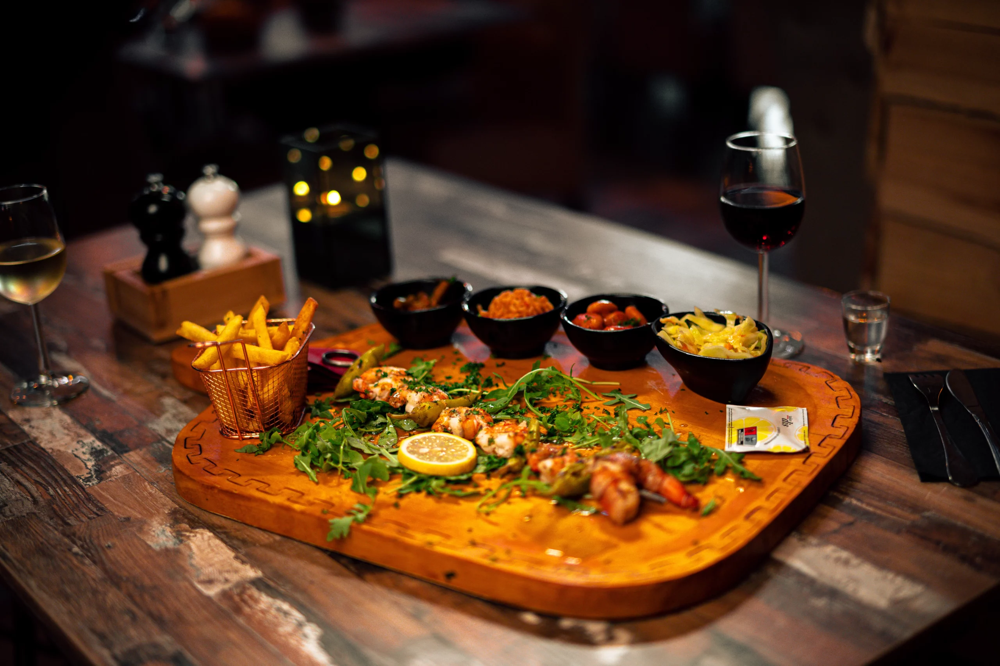
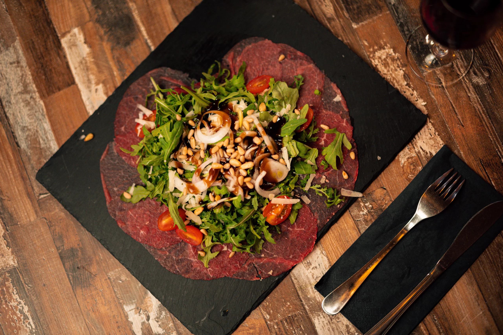
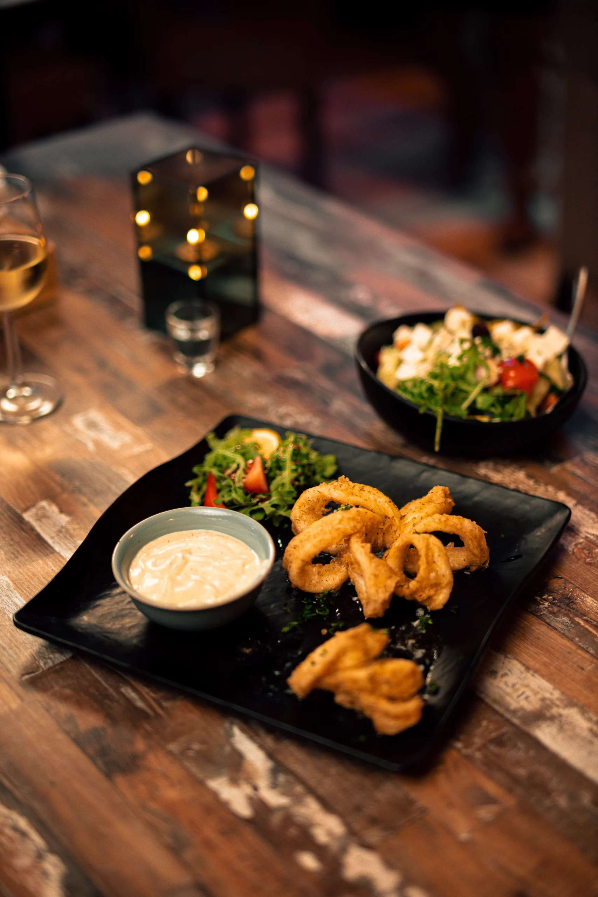
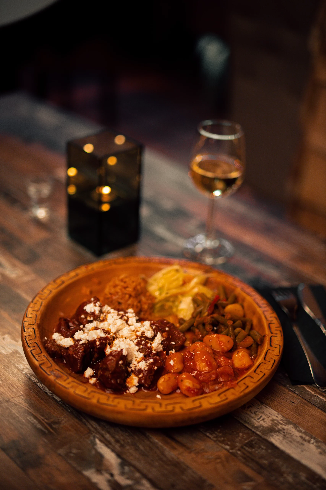
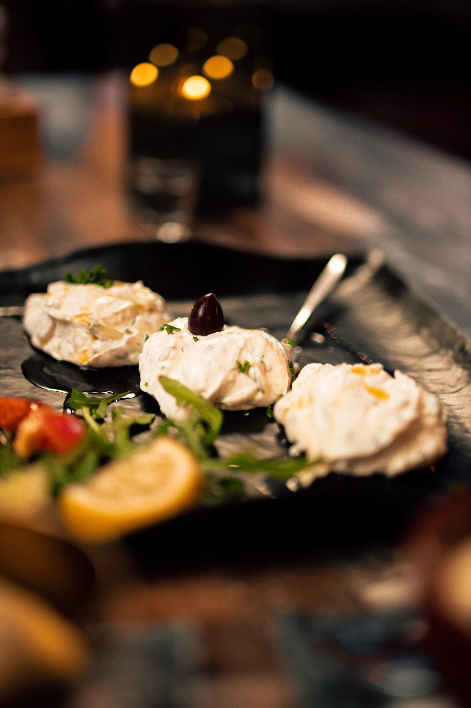
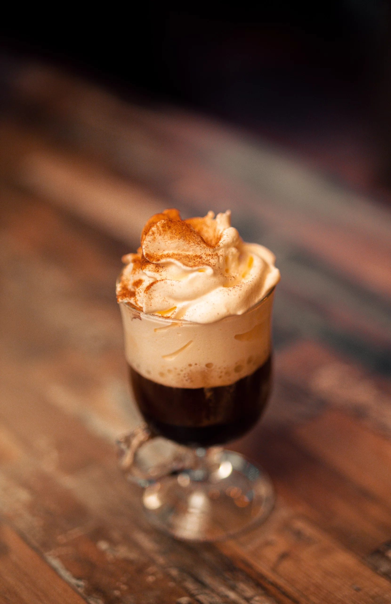
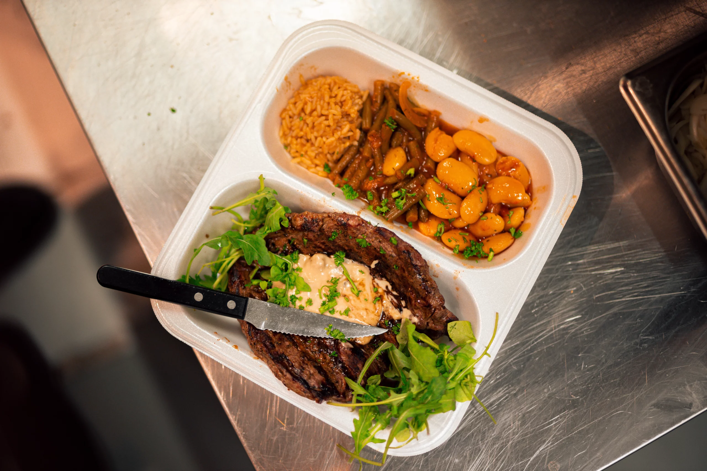
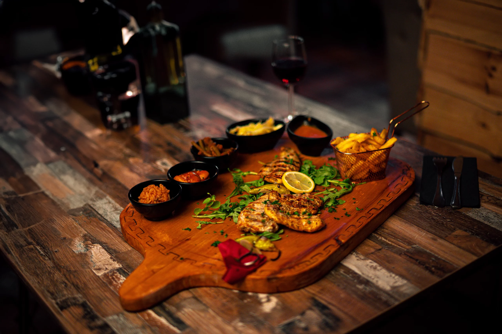

Grieks specialiteitenrestaurant
Een avondje Griekenland dicht bij huis
Pal tegenover het station in Zutphen. Vers vlees van de grill, ouzo, baklava en een hartelijk welkom van Dimitris en Litsa.
Vandaag: dinsdag t/m zondag 16:00 – 22:00, maandag gesloten
Laat u wegvoeren naar Griekenland
Grieks restaurant Mykonos ligt in het centrum van Zutphen, aan het Stationsplein. Beleef een typische Griekse avond met heerlijk geurende gerechten en opzwepende muziek. Verwen uzelf met een glaasje ijskoude ouzo, of een punt baklava.
Voor een uitgebreid diner, een klein hapje tijdens het shoppen of even snel voor de film begint: bij Mykonos bent u op de goede plek. En ook een verjaardag met een groot gezelschap, een jubileum, een receptie, een zakenborrel of juist een romantisch diner voor twee is hier allemaal mogelijk.
- Dagelijks vers vlees van een ambachtelijke slager
- Geopend op alle feestdagen
- Airconditioning in het restaurant
- Rolstoeltoegankelijk, kinderstoelen aanwezig







Afhalen
Alle gerechten van de menukaart kunt u ook meenemen, tegen dezelfde prijzen. Onze afhaalgerechten worden gevacumeerd verpakt en blijven minstens 20 tot 30 minuten warm.
- Afhaaltijden
- 16:00 – 21:00, dinsdag t/m zondag
- Bestellen
- 0575 - 510183
Griekse BBQ-pakketten
Wij maken elke dag verse barbecue. Kies een pakket voor uw eigen grillavond.
BBQ basis
Kip, bifteki en souvlaki
€ 19,50Souvlaki speciaal
Varkenshaas, ossenhaas en lamshaas
€ 24,95Deluxe
Souvlaki, bifteki, kip en lamskotelet
€ 25,50BBQ deluxe
Kip, souvlaki, varkenshaas, lamskotelet en lamshaas
€ 30,50BBQ special
Ossenhaas, varkenshaas, lamshaasjes, kip, souvlaki en lamskotelet
€ 36,50Kinder BBQ
Kip en souvlaki
€ 9,95
Extra's: lamskotelet € 6,95 · souvlaki € 5,00 · ossenhaas € 8,50 · kip € 6,95
Bestellen of vragen: 0575 - 510183
Groepen en feesten
Een verjaardag, huwelijk, eindejaarsborrel, kerstdiner of zakelijke lunch: bij Mykonos bent u met een groot gezelschap van harte welkom. Het restaurant kan worden afgehuurd, met versiering, sta-tafels en een dansvloer. De kok maakt de borrelhapjes zelf.
Er zijn pakketten voor een borrel, lunch, diner of all-in. Vraag gerust naar de mogelijkheden.

Kerstmenu
3 gangen · € 49,90
Op kerstavond, eerste en tweede kerstdag zijn wij geopend vanaf 16:00. Reserveer op tijd.
Voorgerecht keuze uit
Domatosoupa (tomatensoep) · Tzatziki · Spanakotiropita (filodeeg met feta en spinazie) · Keftedakia (gehaktballetjes in tomatensaus) · Dolmadakia (wijnbladeren gevuld met rijst en varkensgehakt) · Midia saganaki (gebakken mosselen in knoflooksaus) · Calamari · Carpaccio
Hoofdgerecht keuze uit
Ossenhaas van de grill met champignon- en pepersaus · Mix grill (gyros, bifteki, souvlaki, lamskotelet, kip) · Souvlaki special · Gemisto fileto · Zalm van de grill met pasta · Souvlaki vulkano · Beef mix · Stifado · Moussaka
Vegetarisch: gemista (paprika gevuld met rijst en aardappel) · laxanika tourlou · kritharoto manitariou
Kinderen: kinder kip · kinder souvlaki · kinder bifteki, met friet, appelmoes en mayonaise
Dessert keuze uit
Griekse yoghurt met honing en walnoten · Karidopita · Baklava · Dame blanche · Kataifi · Portokalopita · Galaktoboureko · Kinderijs · Sokolata
Reserveren
Bel ons op 0575 - 510183 of laat hier uw gegevens achter. Na een bevestiging per mail is uw reservering definitief.
Voor feestdagen geldt: reserveer op tijd.
Contact en openingstijden
- Maandag
- gesloten
- Dinsdag t/m zondag
- 16:00 – 22:00
Geopend op alle feestdagen, ook als die op maandag vallen: Koningsdag, Bevrijdingsdag, Moederdag, Hemelvaart, Pinksteren en 2e Pinksterdag, Vaderdag, Bokbierdag, kerstavond en 1e en 2e Kerstdag. Op feestdagen vanaf 16:00.
Stationsplein 69A7201 MH Zutphen
tegenover het station
0575 - 510183
mykonoszutphen@gmail.com